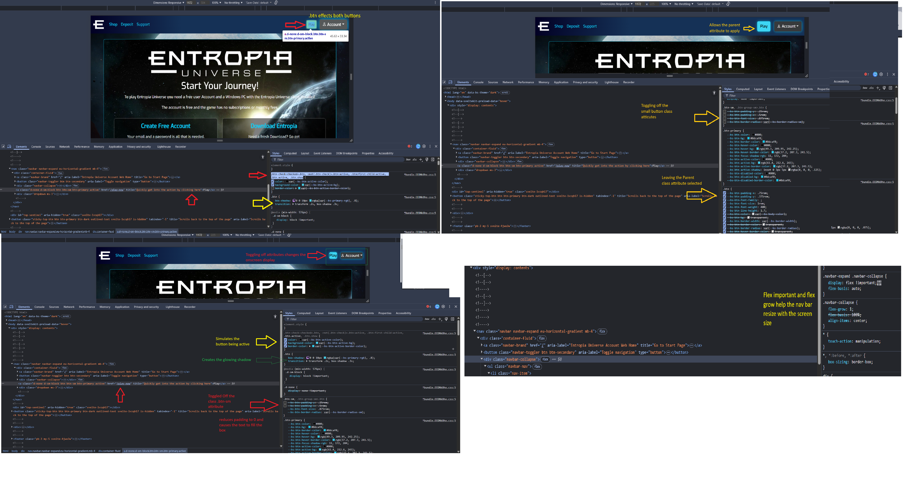

Week 04 Coursework:
Week 04 Discussion Post
Discussion 02: Deconstructing Web Design Prompt:
1. Post a link to the website
2. Identify one specific element and describe how it uses the CSS Box Model (padding, margin, etc.) to create effective spacing.
Using Chrome DevTools. My goal was to understand how the site styles its buttons using the CSS Box Model and how its navigation bar uses Flexbox for layout control.
The first screenshot focuses on the small “Play” button near the top of the page. Inspecting its code shows two classes applied: .btn and .btn-sm. The .btn class acts as the base or parent style, defining shared attributes like padding, font size, and border radius. The .btn-sm class modifies those values to produce a smaller, tighter button. This shows how CSS inheritance works—.btn-sm keeps the core styling of .btn but overrides certain rules (like padding) when necessary.
The second set of screenshots shows what happens when I toggle specific properties in DevTools. By forcing the :hover pseudo-class, I could preview the hover state without actually hovering, revealing color and shadow transitions. Then, by deselecting the padding property, the Box Model visibly collapsed around the word “Play.” The text completely filled the button, proving how padding defines internal spacing, while margin defines space outside an element.
3. Identify a group of elements and explain how the site uses Flexbox to achieve its layout. If the site you selected does not use Flexbox, you'll need to locate a different site.
The navigation bar also uses Flexbox to align its elements. In DevTools, .navbar-expand .navbar-collapse shows display: flex !important; flex-basis: auto;, while .navbar-collapse adds flex-grow: 1; align-items: center;. The !important tag here forces Flexbox to stay active even if other scripts or breakpoints try to override it. It’s a last-resort override—powerful but something to use sparingly in personal projects.
4. Take two (2) screenshots of your web browser dev tools open and inspecting the website you selected.
5. Share your two (2) screenshots of the dev tools showing the CSS rules you are describing.
The first screenshot shows the DevTools open and inspecting the website. The second screenshot shows the DevTools open and inspecting the website.
